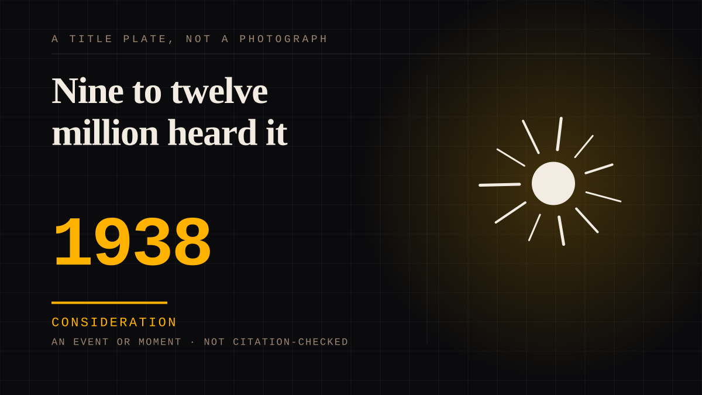

An event or moment · 1938 · Broadcast
Nine to twelve million heard it
Orson Welles presented a novel as a news bulletin on 30 October 1938, and CBS identified it as a dramatic performance four times during the hour. An estimated nine to twelve million Americans heard it, and at least a million of them were scared into some sort of action. By the next morning the newspapers had a story about the listeners, which is the one that has been retold ever since.

The technique is on the record because Welles explained it himself: "The Mercury Theatre's own radio version of dressing up in a sheet and jumping out of a bush and saying Boo!" The hour was built to be believed - a performance interrupted by periodic news bulletins, Martians landing in a town listeners could drive to - and CBS made four announcements during the broadcast identifying it as a dramatic performance. A listener who came in after the opening could not be given the sentence that would have told them, and the arrangements of the evening were such that a great many did.
The apparatus of belief is documented at the National Archives. Four announcements, and still: more than two thousand calls reached the New York police headquarters within a fifteen-minute span; the New York Times switchboard counted 875 calls; more than six hundred people contacted the newly formed Federal Communications Commission, one of them hoping it would "lawfully prevent such broadcasts in the future and, if possible, severely discipline all participants"; a man in Meadville wired that the programme was "not only in bad taste but dangerous" and that his wife and several other women were "confined to beds from shock and hysteria"; the city manager of Trenton reported that it had "completely crippled communication facilities of our Police Department for about three hours." The headlines did the rest: "Mars Invasion in Radio Skit Terrifies U.S.", "Radio Fake Scares Nation".
And then the argument. The nine-to-twelve million in the title is the Archives' own estimate and it is kept as an estimate: later figures for the audience are roughly half of it, a ratings service put only two percent of national respondents on the programme that night, and CBS's Frank Stanton concluded that most Americans had not heard it and that those who did "looked at it as a prank and accepted it that way." Students of the episode argue that Cantril's 1940 study - the source of the canonical panic numbers - put the audience at more than twice the estimate of any other survey of that night, and that treating a listener who was frightened, disturbed or excited as one who was panicked is a categorical error rather than a measurement. Meanwhile no hospital record ties an admission to the broadcast, no suicide is conclusively attributed to it, and a fifty-thousand-dollar suit over it was dismissed.
Both halves are kept, and neither is the story the industry tells.
The calls are documented and so is the national panic built on top of them. What the hour actually establishes is narrower and harder to argue with: some listeners believed it briefly, the FCC investigated and found no law broken, and in the aftermath the Mercury Theatre had corporate sponsorship from the Campbell Soup Company. The entry treats the episode as the moment a question about a medium's effect on an audience became a research programme, a regulatory problem and an industry talking point in the same week - which is why it belongs with the arguments rather than with the entertainments.
Consideration. The part where somebody stops and thinks. The research, the diagnosis, the ethics, the lawsuits, the regulators. Roughly fifty years of arguing with itself about whether this is a relationship.
Where it sits
1900 1900-1949 · 1938 1949
Provenance · 5 source record(s)
- unverifiedThe entry's title and its spine, from the government's own record of the response. That on October 30, 1938 the Mercury Theatre on the Air, led by twenty-three-year-old Orson Welles, presented the adaptation on CBS; Welles' own closing description, "The Mercury Theatre's own radio version of dressing up in a sheet and jumping out of a bush and saying Boo!"; "But although CBS made four announcements during the broadcast identifying it as a dramatic performance, at least one million of the estimated nine to twelve million Americans who heard it were deeply scared by that 'Boo'-scared into some sort of action." Also the response records the entry's second paragraph quotes - the two thousand calls to New York police headquarters in a fifteen-minute span, the 875 calls to the New York Times switchboard, the six hundred to the FCC, the Chicago complaint that it hoped the Commission would "lawfully prevent such broadcasts in the future and, if possible, severely discipline all participants", the Meadville telegram, the Trenton letter, and the headlines "Mars Invasion in Radio Skit Terrifies U.S." and "Radio Fake Scares Nation" - with letters and telegrams cited to Record Group 173, Records of the Federal Communications Commission, at the National Archives at College Park. These figures were read through the search index rather than opened in the article, and the title sentence above was confirmed against the article's own text. Read through a search index rather than fetched, so the record is unverified: a reader can open this page, this agent did not.National Archives, "'Jitterbugs' and 'Crack-pots': Responses in 1938 to 'War of the Worlds'" ↗
- unverifiedThe audience figures that disagree with the Archives', kept beside them. That the usual figures are six million who heard the broadcast, 1.7 million who believed it and 1.2 million who were frightened; and Pooley and Socolow's conclusion that "Cantril's study had serious flaws. Its estimate of the program's audience is more than twice as high as any other at the time." Read through a search index rather than fetched, so the record is unverified: a reader can open this page, this agent did not.Wikipedia, "The War of the Worlds (1938 radio drama)" ↗
- unverifiedThe half of the record that deflates the myth, with its documents. That WABC's statement an hour after the broadcast repeated the fact "which was made clear four times on the program"; that the C.E. Hooper ratings service reported only two percent of national respondents tuned in; Stanton's conclusion that most Americans did not hear it and that those who did "looked at it as a prank and accepted it that way"; that hospitals contacted recorded no admissions on account of the broadcast; that no suicide is conclusively attributed to it; and that a $50,000 suit over the programme was dismissed. Read through a search index rather than fetched, so the record is unverified: a reader can open this page, this agent did not.Snopes, check of the War of the Worlds panic story ↗
- unverifiedThe distinction the entry's third paragraph leans on, stated as a methodological objection rather than as scepticism. That "Cantril committed an obvious categorical error by conflating being 'frightened,' 'disturbed,' or 'excited' by the program with being 'panicked.'" Read through a search index rather than fetched, so the record is unverified: a reader can open this page, this agent did not.Slate, October 2013, on the War of the Worlds panic myth ↗
- unverifiedWelles' own account of the evening and the official aftermath. "I had no idea that I had suddenly become some sort of national event."; that at 8pm Eastern Time the broadcast began with Welles introducing the drama and clarifying that it was fiction, and that listeners who tuned in late missed the disclaimer; that police arrived at the CBS studio during the performance; that there were threats of lawsuits and calls for censorship; and that the FCC investigated and found no law had been broken, though networks agreed to be more cautious with future programming. Read through a search index rather than fetched, so the record is unverified: a reader can open this page, this agent did not.BBC Culture (2023), Orson Welles on the War of the Worlds broadcast ↗
Connected · 3 out, 2 in
It sits in